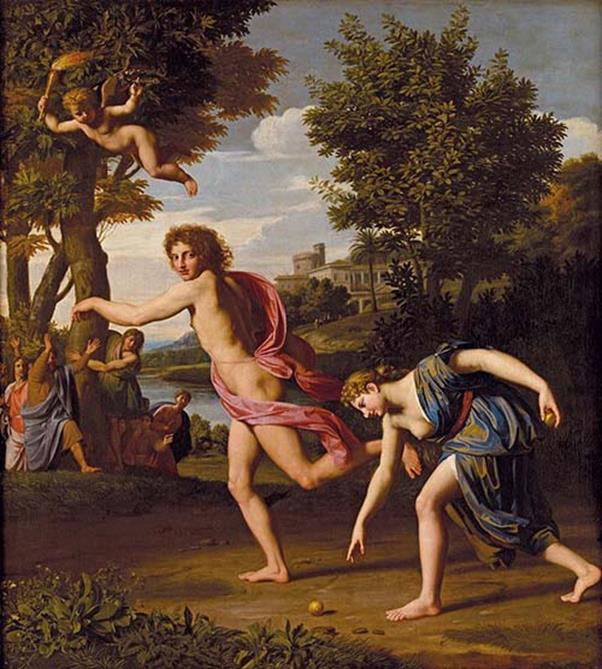

Như đã kể trên, vua Oenée trị vì ở đô thành Calydon, vì nhãng quên không dâng lễ hiến tế cho nữ thần Artémis vào đầu vụ thu hoạch, cho nên đã làm nữ thần phật ý. Một đòn trừng phạt liền giáng xuống để chứng tỏ uy quyền của nữ thần. Artémis sai một con lợn rừng về tàn phá vùng Calydon. Vườn nho, vườn táo, đồng lúa... tất cả đều bị con lợn rừng hung dữ phá phách, xéo nát. Người nào ló mặt ra toan chống chọi thì lập tức con lợn lao tới ngay, và phần thắng thuộc về con ác thú của nữ thần Artémis. Người anh hùng Méléagre, con trai của vua Oenée kêu gọi các anh hùng Hy Lạp đến giúp mình một tay trừng trị con vật nguy hiểm. Lập tức các vị anh hùng từ bốn phương kéo đến. Thésée từ Athènes sang, Admète từ thành Phères tới, rồi Pélée ở xứ Phthie, Jason từ Iolcos, Pirithoos từ Thessalie, Télamon từ đảo Salamine... Đặc biệt có một nữ anh hùng tên là Atalante có tài chạy nhanh như một con hươu chân dài sung sức. Sở dĩ nàng có được tài năng như vậy là vì nàng từ nhỏ sống trong rừng với những người thợ săn. Cha nàng không muốn có con gái cho nên khi sinh ra nàng ông bực tức và thất vọng, đã sai người đem nàng bỏ vào rừng. Một con gấu cái đón được nàng, cho nàng bú rồi nàng lớn lên gia nhập vào hàng ngũ những người thợ săn và trở thành xạ thủ danh tiếng tưởng chừng có thể sánh ngang nữ thần săn bắn Artémis.

Atalăngtơ chạy thi với Hipômenex (Hipômenex dùng mẹo thả táo để Atalăngtơ ngừng lại nhặt, nhờ đó Hipômenex thắng cuộc thi và lấy Atalăngtơ làm vợ)
Cuộc săn đuổi con lợn rừng diễn ra suốt trên một dải rừng ở vùng Calydon. Nhờ tài chạy nhanh, Atalante đuổi bám được con thú. Nàng giương cung. Một mũi tên lao đi cắm phập vào con lợn làm nó bị thương. Méléagre nhờ đó chạy dấn lên phóng mũi lao nhọn vào con vật kết liễu số phận tàn ác của nó. Tiếp đó, những người khác mới xông đến bồi tiếp những đòn cuối cùng. Bàn việc chia phần, một việc tưởng chừng đơn giản, ai ngờ lại quá phức tạp, lôi thôi. Phần vì có những vị anh hùng mà tính nết cứ đến cái chuyện chia phần như thế này thì chẳng anh hùng tí nào, phần vì nữ thần Artémis, tức giận vì con lợn rừng của mình bị giết, đã khơi lên trong trái tim những người dự cuộc họp bình công chia phần hôm ấy tính ghen tị, thói kèn cựa nhỏ nhen. Theo lẽ công bằng, như Méléagre phân giải, phần thưởng cao nhất, danh dự của cuộc săn phải trao cho Atalante, nhưng tiếc thay chẳng ai còn tỉnh táo và trong sáng để thừa nhận công lao của người nữ anh hùng ấy. Tệ hơn nữa là những ông cậu của Méléagre lại xúc phạm đến Atalante, vu cáo cho Méléagre thiên vị, bênh vực người mình yêu. Méléagre điên tiết giết phăng luôn mấy ông cậu đó. Từ bé xé ra to. Những người Élis ở Calydon không chịu nổi bèn tuyên chiến với những người Curètes ở thành Pleuron bên cạnh. Méléagre cầm đầu những đạo quân Calydon của chàng đánh thắng liên tiếp. Đang khi chiến đấu thì chàng được tin mẹ chàng, Althée, vì thương tiếc hai người em ruột của mình bị chàng giết, đã nổi giận cầu nguyện các nữ thần Érinyes chuyên việc báo thù, cầu nguyện thần Hadès và nữ thần Perséphone cai quản chốn âm ty địa ngục, trừng phạt chàng. Méléagre nổi giận, chàng không thể ngờ được mẹ chàng lại đối xử với chàng như thế. Chàng từ bỏ luôn cuộc chiến đấu lui về phòng riêng của mình than thở với người vợ trẻ đẹp tên là Cléopâtre.
Méléagre từ bỏ cuộc chiến đấu. Cục diện chiến trường thay đổi ngay: những người Calydon từ thắng chuyển thành bại, và thất bại này kéo theo thất bại khác, thất bại sau nặng nề hơn thất bại trước. Cuối cùng, quân Curètes thừa thắng xông lên vây hãm thành Calydon. Tình thế hết sức nguy ngập, đô thành đứng trước họa tiêu vong. Trong hoàn cảnh quẫn bách như thế, vua cha Oenée không biết làm gì hơn là đành phải thân chinh đến gặp Méléagre để khuyên giải Méléagre nguôi giận và trở lại chiến trường, nhưng Méléagre một mực cự tuyệt. Các bô lão thành Calydon cũng kéo đến khẩn thiết xin Méléagre xuất trận. Họ hứa sẽ trao cho chàng phần thưởng to lớn nhất, hậu hĩ nhất một khi quân Curètes bị đánh tan, nhưng người anh hùng Méléagre vẫn không thuận theo ý muốn của các vị bô lão. Cả đến mẹ và em chàng đến gặp chàng, đem hết tình, lý ra thuyết phục chàng, chàng vẫn không nghe. Quân Curètes đã chọc thủng được một mảng tường thành tràn vào đất phá một khu vực và nếu không ngăn cản được thì sớm muộn cả kinh thành sẽ bị thiêu đốt ra tro.
Trong nỗi kinh hoàng gớm ghê đang sầm sập đổ xuống, người vợ trẻ đẹp của Méléagre, nàng Cléopâtre, quỳ xuống trước mặt chồng, nói với chồng những lời tha thiết sau đây:
- Chàng ơi, xin chàng hãy bớt giận làm lành! Lẽ nào chàng đành lòng ở đây để nhìn đô thành ta bị đốt cháy thành tro bụi, để nhìn những người dân thành Calydon vốn yêu mến chàng như những người thân thích trong gia đình bị bắt giải đi làm nô lệ? Chàng có lúc nào nghĩ tới chính trong số những người dân Calydon bất hạnh ấy, có cha mẹ chàng và những đứa em thân yêu của chàng không? Chàng có bao giờ nghĩ tới trong số những người khổ nhục ấy có người vợ thân yêu còn son trẻ và xinh đẹp của chàng không? Làm sao mà cha mẹ và các em của chàng cũng như vợ chàng có thể thoát khỏi cái số phận nhục nhã đó nếu như họ không chết dưới mũi lao của quân thù? Nỗi giận hờn dai dẳng làm cho con người ta mất cả tỉnh táo khôn ngoan. Linh hồn những chiến sĩ bị chết vì quân Curètes sẽ muôn đời nuôi giữ mối thù oán hận đối với chàng. Họ khi đứng trước thần Hadès và nữ thần Perséphone sẽ nói: “Chỉ tại chàng Méléagre nuôi giữ mối giận hờn dai dẳng với mẹ, từ bỏ cuộc giao tranh cho nên chúng tôi mới sớm phải lìa đời với bao niềm luyến tiếc...” Họ sẽ nói như thế, nhưng còn chàng, khi ấy chàng ở đâu? Liệu chàng có thoát khỏi số phận nhục nhã bị quân thù bắt giải đi hay trong cơn binh lửa chàng cũng đã gục ngã vì một mũi tên hay một ngọn lao ác hiểm nào?
Nghe vợ nói những lời tâm tình đau xót, Méléagre tỉnh ngộ. Chàng mặc áo giáp vào người, cầm lấy khiên và ngọn lao dài nhọn hoắt xông ra chiến trường. Quân Calydon thấy vị tướng tài của mình trở lại chiến trường lòng đầy hồ hởi. Họ xông vào đánh quân thù với khí thế dũng mãnh như hùm sói. Thành Calydon được giải vây, nhưng ứng nghiệm thay lời cầu xin của Althée, một mũi tên vàng của thần Apollon từ đâu bay tới kết liễu cuộc đời của chàng. Linh hồn của Méléagre rời bỏ cuộc sống ra đi nhưng còn nuôi giữ mãi nỗi ân hận, lo lắng cho tương lai của nàng Dejánire, người em gái xinh đẹp và thương yêu của mình. Còn Althée, sau khi được tin con trai tử trận, hối hận vì hành động nóng giận của mình đã treo cổ tự sát. 190
Có một nguồn chuyện kể: Dejánire không phải là em cùng bố với Méléagre. Bố Dejánire là thần Rượu nho-Dionysos. Vị thần này mê cảm trước sắc đẹp của Althée đã gạ gẫm vua Oenée cho “mượn” bà vợ ít ngày. Tặng vật hậu tạ là cây nho. Trước một tặng vật vô cùng quý báu như thế, vua Oenée lúc đầu có phần lưỡng lự song sau khi cân nhắc, nhà vua liền ưng thuận. Từ đó trở đi trên mảnh đất Calydon mọc lên những ruộng nho bạt ngàn xanh tốt, và Dejánire là kết quả của mối tình ngắn ngủi giữa Dionysos và Althée.
Nhận xét về huyền thoại này, F. Engels viết: “... Chỉ qua thần thoại của thời anh hùng mà người Hy Lạp biết được bản chất hết sức chặt chẽ của mối liên hệ trong nhiều bộ tộc đã gắn bó người cậu với người cháu trai và phát sinh từ thời đại mẫu quyền. Theo Diodore (IV, 34), Méléagre giết chết những người con trai của Thestios191 tức là những người anh em của mẹ hắn Althée, bà này coi hành vi đó là một tội ác không thể chuộc được, đến nỗi bà nguyền rủa kẻ sát nhân tức đứa con trai của bà và cầu cho hắn chết đi. Theo chỗ người ta kể lại thì các vị thần đã thể theo nguyện vọng của bà ta mà chấm dứt cuộc đời của Méléagre”.192
Như vậy vì xót xa mối tình ruột thịt anh em của mình mà Althée, một người mẹ đã không còn tình mẫu tử nữa. Việc bà ta cầu xin các vị thần giết chết đứa con trai do mình dứt ruột đẻ ra để trả thù cho anh em ruột thịt của mình chứng tỏ bà ta coi trọng dòng họ của mình hơn. Đứa con trong quan niệm của bà ta hẳn là không thân thiết bằng anh em ruột thịt. Nó thuộc về dòng họ khác, dòng họ của người cha, và hành động của Althée trong chuyện này là một bằng chứng về sức sống của chế độ mẫu quyền, về mối liên hệ chặt chẽ của chế độ mẫu quyền.
Tuy nhiên có một câu hỏi đương nhiên đặt ra đối với vấn đề này: Vì sao đứa con ở trong chuyện này lại bị coi là thuộc về dòng họ của người cha? Nếu trong quan hệ mẫu quyền theo ý nghĩa chính xác nhất, chặt chẽ nhất, thì đứa con không thể nào thuộc về dòng họ của người cha được. Trong quan hệ mẫu quyền phổ biến, đứa con bao giờ cũng thuộc về người mẹ, dòng họ người mẹ, thuộc về thị tộc mẫu hệ và chắc chắn Althée sẽ không thể nào nảy ra cái ý định muốn trừng phạt con để trả thù cho anh em ruột thịt của mình. Nhưng trong thực tế của câu chuyện này thì rõ ràng đứa con, chàng Méléagre, người anh hùng của thành Calydon, là sản phẩm của một quan hệ phụ quyền. Vậy thì chúng ta phải đi đến một kết luận để giải quyết cái mâu thuẫn mà xét qua bề ngoài ta thấy tưởng chừng như hết sức vô lý và khó hiểu đó: đây là một huyền thoại phức hợp, bên cạnh những quan hệ mẫu quyền ta thấy có cả những đặc điểm của chế độ phụ quyền.
190 Có nguồn chuyện kể Althée vứt đoạn củi-số mệnh của Meléagre vào bếp cho cháy hết. Xem chương: Mười hai kỳ công của Héraclès: Bắt sống chó ngao Cerbère.
191 Thestios là cha đẻ của Althée và ba người con trai là Alcée, Céphée và Ploceppe.
192 F. Engels, Nguồn gốc của gia đình, của chế độ tư hữu, và của nhà nước. NXB Sự thật, Hà Nội, 1961, tr. 205-206.